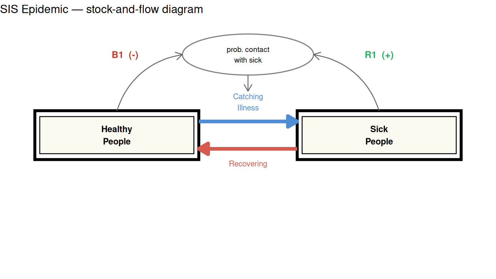
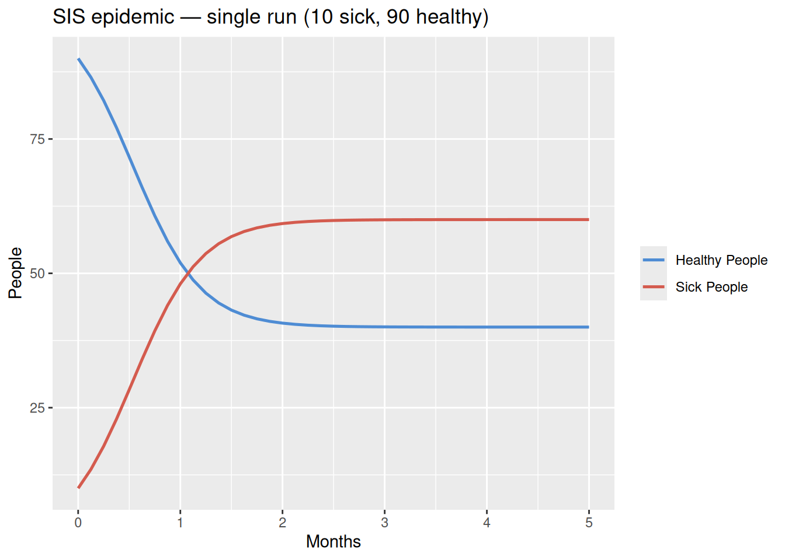
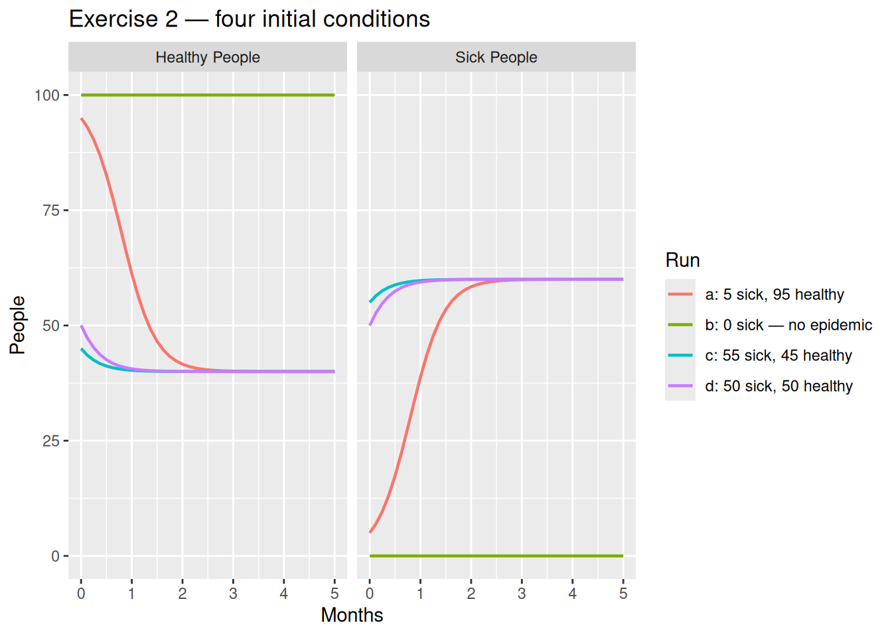
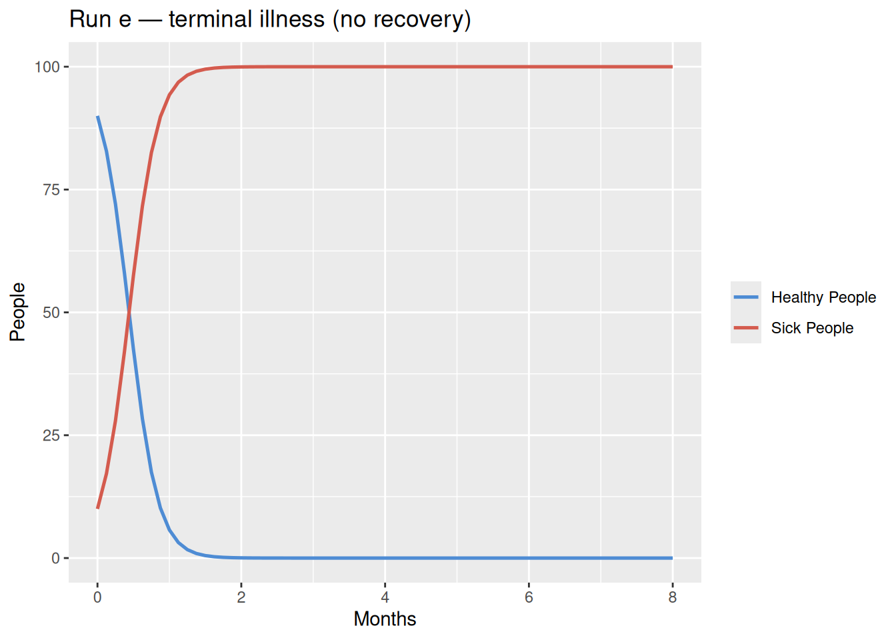

library(deSolve)
library(tidyverse)SD Tutorial 6: S-Shaped Growth — SIS Epidemic Model
Two interacting stocks, opposing flows, and the dynamics of infection
Required R packages
Acknowledgement
The core content behind this tutorial derives from the Road Maps curriculum, developed by the System Dynamics in Education Project (SDEP) at MIT under the direction of Professor Jay Forrester.
Source material for this tutorial comes from Generic Structures: S-Shaped Growth I (D-4432-2), Section: S-Shaped Growth Structure 2.
S-Shaped Growth Is a Behaviour, Not a Structure
In Tutorial 5 we saw S-shaped growth emerge from a single stock with a density-dependent deaths multiplier. This tutorial shows that the same characteristic behaviour can arise from a completely different mechanism — two interacting stocks with no lookup tables at all.
The key insight: S-shaped growth is a behaviour pattern, not a structure. Multiple mechanistically distinct systems can produce it.
The SIS Epidemic Structure
This model describes the spread of an illness through a fixed population of 100 people. There is no permanent immunity: once a sick person recovers, they return to the healthy pool and can be re-infected. This is known as an SIS (Susceptible → Infected → Susceptible) structure.
The two stocks are:
- Healthy People — those susceptible to infection
- Sick People — those currently infected
Two flows connect them in opposing directions:
- Catching Illness — moves people from Healthy to Sick; driven by contact between healthy and sick people
- Recovering — moves people from Sick back to Healthy; driven by the duration of illness

Two feedback loops drive this system:
- R1 (+): More sick people → more probability of contact with sick people → more probability of catching illness → more sick people. This reinforcing loop accelerates the epidemic.
- B1 (-): More healthy people → lower probability of contact with sick people → less catching illness → fewer sick people → fewer people recovering → fewer healthy people. This balancing loop controls disease spread over time.
Model Equations
The catching illness rate depends on three factors: the number of healthy people available to be infected, the probability of contact with a sick person (sick/total population), and the rate and likelihood of transmission on contact.
\[\text{Catching Illness} = \text{Healthy} \times \frac{\text{Sick}}{\text{Total Population}} \times \text{Population Interactions} \times P(\text{catching})\]
\[\text{Recovering} = \frac{\text{Sick}}{\text{Duration of Illness}}\]
The differential equations governing the two stocks are:
\[\frac{d(\text{Healthy})}{dt} = \text{Recovering} - \text{Catching Illness}\]
\[\frac{d(\text{Sick})}{dt} = \text{Catching Illness} - \text{Recovering}\]
Note that total population = Healthy + Sick is conserved — the model has no births or deaths, only movement between compartments.
Parameters
| Parameter | Symbol | Value | Units |
|---|---|---|---|
| Duration of illness | \(D\) | 0.5 | months |
| Population interactions | \(PI\) | 10 | contacts / person / month |
| Probability of catching | \(PC\) | 0.5 | dimensionless |
R Modelling Tutorial
Model function
model <- function(time, stocks, params) {
with(as.list(c(stocks, params)), {
a_total_population <- s_healthy + s_sick
a_prob_contact_sick <- s_sick / a_total_population
f_catching_illness <- s_healthy * a_prob_contact_sick *
p_population_interactions * p_prob_catching # people/month
f_recovering <- s_sick / p_duration_of_illness # people/month
ds_healthy_dt <- f_recovering - f_catching_illness
ds_sick_dt <- f_catching_illness - f_recovering
return(list(c(ds_healthy_dt, ds_sick_dt),
catching_illness = f_catching_illness,
recovery_rate = f_recovering))
})
}Parameters and simulation time
params <- c(p_duration_of_illness = 0.5, # months
p_population_interactions = 10, # contacts/person/month
p_prob_catching = 0.5) # dimensionless
simtime <- seq(0, 5, by = 0.125) # monthsSingle test run
Before running multiple scenarios, let us verify the model produces sensible output for one set of initial conditions: 10 sick people and 90 healthy people.
stocks_a <- c(s_healthy = 90, s_sick = 10)
test_run <- ode(y = stocks_a, times = simtime, func = model,
parms = params, method = "rk4") %>%
as_tibble() %>%
pivot_longer(-time) %>%
mutate(value = as.numeric(value),
time = as.numeric(time))
test_run %>%
filter(name %in% c("s_healthy", "s_sick")) %>%
ggplot(aes(x = time, y = value, colour = name)) +
geom_line(linewidth = 0.9) +
scale_colour_manual(values = c(s_healthy = "#4e8cd4", s_sick = "#d45b4e"),
labels = c(s_healthy = "Healthy People",
s_sick = "Sick People")) +
labs(title = "SIS epidemic — single run (10 sick, 90 healthy)",
x = "Months",
y = "People",
colour = NULL)
The system reaches a stable equilibrium rather than infecting the entire population. The epidemic overshoots slightly then settles — a classic S-shaped trajectory for sick people.
Exercise 2: four initial conditions
To understand how initial conditions affect behaviour, we run four scenarios matching Exercise 2 from the Road Maps source material. We wrap the simulation in a function and use purrr::pmap_dfr() to iterate across all four scenarios at once.
run_sis <- function(sim_id, init_healthy, init_sick,
start = 0, finish = 5, step = 0.125) {
stocks <- c(s_healthy = init_healthy, s_sick = init_sick)
sim_time <- seq(start, finish, by = step)
ode(y = stocks, times = sim_time, func = model,
parms = params, method = "rk4") %>%
as_tibble() %>%
pivot_longer(-time) %>%
mutate(value = as.numeric(value),
time = as.numeric(time),
run = sim_id)
}sim_results <- pmap_dfr(
list(
sim_id = c("a: 5 sick, 95 healthy",
"b: 0 sick — no epidemic",
"c: 55 sick, 45 healthy",
"d: 50 sick, 50 healthy"),
init_healthy = c(95, 100, 45, 50),
init_sick = c(5, 0, 55, 50)
),
.f = run_sis
)
glimpse(sim_results)Rows: 656
Columns: 4
$ time <dbl> 0.000, 0.000, 0.000, 0.000, 0.125, 0.125, 0.125, 0.125, 0.250, 0…
$ name <chr> "s_healthy", "s_sick", "catching_illness", "recovery_rate", "s_h…
$ value <dbl> 95.000000, 5.000000, 23.750000, 10.000000, 92.990980, 7.009020, …
$ run <chr> "a: 5 sick, 95 healthy", "a: 5 sick, 95 healthy", "a: 5 sick, 95…sim_results %>%
filter(name %in% c("s_healthy", "s_sick")) %>%
mutate(name = recode(name,
s_healthy = "Healthy People",
s_sick = "Sick People")) %>%
ggplot(aes(x = time, y = value, colour = run)) +
geom_line(linewidth = 0.8) +
facet_wrap(~name) +
labs(title = "Exercise 2 — four initial conditions",
x = "Months",
y = "People",
colour = "Run")
The four runs reveal the key behaviours of this system:
- Run a (5 sick) and run d (50 sick): both converge to the same equilibrium of 40 healthy / 60 sick, regardless of where they started. The system has a single stable attractor.
- Run c (55 sick): starts above the equilibrium sick count and decays back down to it — the epidemic recedes.
- Run b (0 sick): with no sick people to start, the positive feedback loop cannot ignite. Total population stays healthy — this is an unstable equilibrium at
Sick = 0.
Run e: terminal illness
What happens if there is no recovery? A terminal illness removes the balancing loop B1 entirely. Without recovery pulling people back to the healthy pool, the epidemic follows a pure S-curve until the entire population is sick.
model_no_recovery <- function(time, stocks, params) {
with(as.list(c(stocks, params)), {
a_total_population <- s_healthy + s_sick
a_prob_contact_sick <- s_sick / a_total_population
f_catching_illness <- s_healthy * a_prob_contact_sick *
p_population_interactions * p_prob_catching
f_recovering <- 0
ds_healthy_dt <- -f_catching_illness
ds_sick_dt <- f_catching_illness
return(list(c(ds_healthy_dt, ds_sick_dt),
catching_illness = f_catching_illness,
recovery_rate = f_recovering))
})
}simtime_e <- seq(0, 8, by = 0.125) # extended to show full S-curve
run_e <- ode(y = c(s_healthy = 90, s_sick = 10), times = simtime_e,
func = model_no_recovery, parms = params, method = "rk4") %>%
as_tibble() %>%
pivot_longer(-time) %>%
mutate(value = as.numeric(value),
time = as.numeric(time))
run_e %>%
filter(name %in% c("s_healthy", "s_sick")) %>%
mutate(name = recode(name,
s_healthy = "Healthy People",
s_sick = "Sick People")) %>%
ggplot(aes(x = time, y = value, colour = name)) +
geom_line(linewidth = 0.9) +
scale_colour_manual(values = c("Healthy People" = "#4e8cd4",
"Sick People" = "#d45b4e")) +
labs(title = "Run e — terminal illness (no recovery)",
x = "Months",
y = "People",
colour = NULL)
Without recovery, sick people grow in a classic S-shape — slow at first (few sick), then rapid (positive loop dominates), then levelling off as the healthy pool is exhausted (negative loop B2 dominates). The system reaches a new equilibrium of Sick = 100, Healthy = 0.
Equilibrium
At equilibrium, inflow equals outflow for both stocks:
\[\text{Catching Illness} = \text{Recovering}\]
Substituting the model equations:
\[H^* \times \frac{S^*}{N} \times PI \times PC = \frac{S^*}{D}\]
Where \(N = H^* + S^* = 100\) is the fixed total population. Dividing both sides by \(S^*\) (assuming \(S^* \neq 0\)) and rearranging:
\[H^* = \frac{N}{PI \times PC \times D} = \frac{100}{10 \times 0.5 \times 0.5} = \frac{100}{2.5} = 40\]
Therefore:
\[S^* = N - H^* = 100 - 40 = 60\]
The system always settles at 40 healthy, 60 sick — regardless of initial conditions — as long as \(S_0 > 0\). This equilibrium is confirmed by all the runs above (a, c, and d all converge to the same values).
sim_results %>%
filter(name %in% c("s_healthy", "s_sick"),
time == max(time)) %>%
select(run, name, value) %>%
mutate(value = round(value, 2)) %>%
pivot_wider(names_from = name, values_from = value)# A tibble: 4 × 3
run s_healthy s_sick
<chr> <dbl> <dbl>
1 a: 5 sick, 95 healthy 40 60
2 b: 0 sick — no epidemic 100 0
3 c: 55 sick, 45 healthy 40 60
4 d: 50 sick, 50 healthy 40 60Conclusion
This tutorial demonstrated S-shaped growth emerging from a two-stock SIS epidemic structure. Several insights stand out:
S-shaped growth is a behaviour, not a structure. The same S-curve seen in the single-stock density model (Tutorial 5) arises here from a fundamentally different mechanism — the interaction between two populations.
The product of two stocks creates nonlinearity. The catching illness rate is proportional to
Healthy × (Sick/Total), which is what generates the characteristic S-shape without any lookup table.Equilibrium can be derived algebraically. Setting catching illness equal to Recovering and solving gives \(H^* = N / (PI \times PC \times D)\) — a clean formula for the stable endemic level.
Initial conditions determine trajectory, not destination. All positive-\(S_0\) runs converge to the same equilibrium; only the path differs.
Removing recovery eliminates the stable interior equilibrium. Without recovery (run e), the only equilibrium is full infection — confirming that B1 is essential for containing the epidemic.